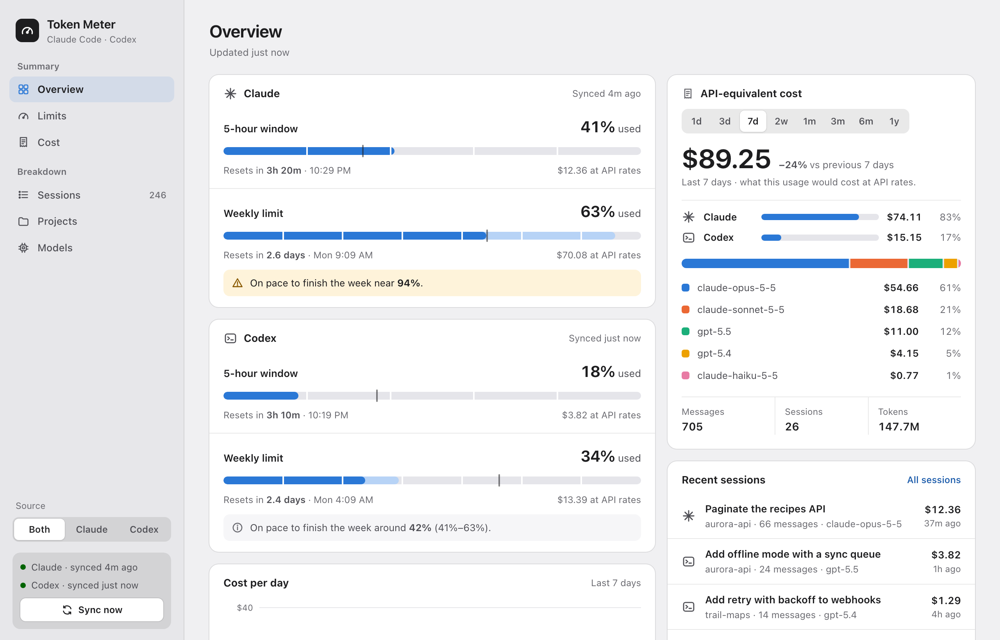

See the wall before you hit it.
Token Meter keeps your Claude Code and Codex limits in the menu bar, warns you before you run out, and shows what all those tokens would have cost at API prices. It's the receipt you'll never get.
- macOS 13+, Apple Silicon and Intel
- Runs entirely on your Mac
- No account, no telemetry
Drag through a Tuesday
A made-up work day. Watch the menu bar.
Click the menu bar item. The rest is right there.
The dashboard answers the same two questions in more depth: how much room is left, and what the work cost. Pick a view, or click the sidebar in the window itself.

Light and Dark follow your Mac. Screenshots use made-up data.
Your logs never leave your Mac.
Claude Code and Codex already write a log of every session to your disk. Token Meter reads those files, prices them, and keeps the results in a local database.
Logs already on your Mac
~/.claude/projects/
~/.codex/sessions/
Only new lines are read on each sync, so years of history stay fast.
A local database
~/Library/Application Support/TokenMeter/
Every turn priced at published API rates, cache reads and writes included.
Your menu bar
5h 41% · W 63%
Plus the dashboard window, served from inside the app. No port is opened.
The limits are the real ones.
The percentages come from the providers. Claude's are read with the login Claude Code already keeps in your Keychain, and Codex's from
codex app-server. Both refresh every 10 minutes, or when you click Sync Now. These two checks are the only network calls the app makes.Forecasts come from your own weeks.
"On pace to finish the week near 78%" is projected from the shape of your past weeks, with a range, not a straight line from Monday. Estimates are always labeled as estimates.
The dollars are hypothetical.
On a Claude Pro or Max plan, or ChatGPT Plus or Pro, nobody bills you per token. Token Meter shows what the same tokens would cost on the API, which is either reassuring or alarming.
Small and native.
A universal Swift app of about 2 MB. No account, no analytics, no Electron, no background server.
Installed in under a minute.
Download the app
Get
TokenMeter.dmgfrom the latest GitHub release.Drag it to Applications
Open the disk image and drag Token Meter onto the Applications folder.
Open it once, the long way
Token Meter isn't notarized by Apple yet, so the first launch shows a warning. Click Done, then go to System Settings → Privacy & Security, scroll down and click Open Anyway.
Look up
The gauge appears in your menu bar. If macOS asks whether
securitymay use “Claude Code-credentials”, choose Always Allow: that's how it reads your Claude limits.
--import-db legacy-python/usage.sqlite3 to keep your limit history.Or build it yourself
All you need is the Xcode Command Line Tools. No Xcode, no Apple Developer account, and no Gatekeeper warning for an app you built.
$ xcode-select --install $ git clone https://github.com/avaakash/claude-api-pricing-visualizer.git $ cd claude-api-pricing-visualizer $ ./build.sh --install
- macOS 13 Ventura or later
- Apple Silicon or Intel (one universal app)
- Claude Code, Codex, or both, used on this Mac
Questions
Am I being charged these amounts?
No. On a subscription the dollar figures are what the same tokens would cost on the pay-per-token API. They're there for perspective, not billing.
Does anything leave my Mac?
Only the two limit checks, which go to Anthropic and to OpenAI (through the codex CLI) using the logins you already have. Your logs, prompts and costs stay on your machine.
Why does it ask for my Keychain?
Claude's live limit percentage is read with the token Claude Code stored there when you logged in. Deny it and everything else still works; the Claude limit cards fall back to estimates.
Do I need both Claude Code and Codex?
No. Token Meter shows whichever you use, and you can switch between Claude, Codex or both in the sidebar.
Why isn't it on the Mac App Store?
The App Store sandbox would block reading ~/.claude, the Keychain item and the codex binary, which is the whole app.
The prices look wrong.
Pricing lives in two JSON files in the repository. Edit them and rebuild, and old messages are repriced on the next launch. Pull requests with updated prices are welcome.
How do I uninstall it?
Quit it from the menu bar, then delete Token Meter from Applications and the folder ~/Library/Application Support/TokenMeter.